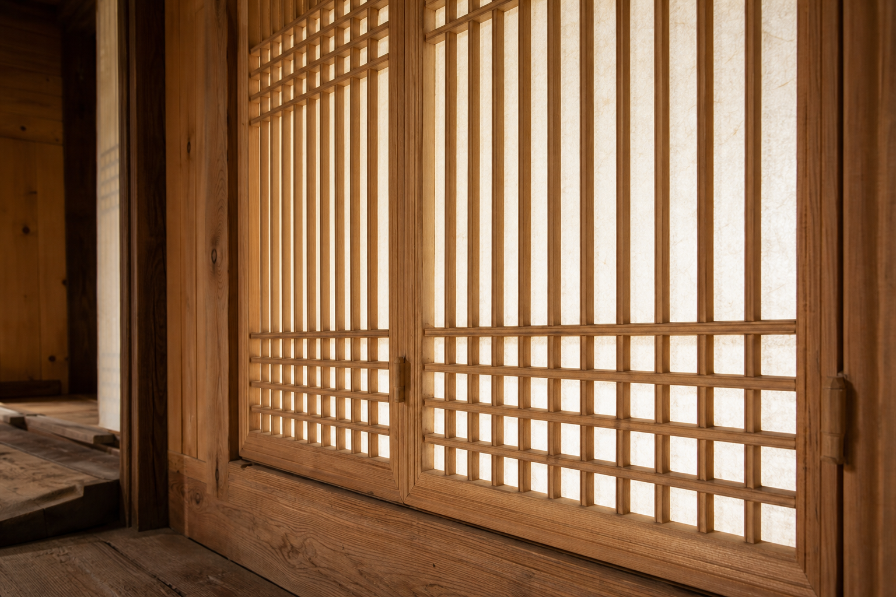

한옥 창호의 살대가 빛과 공간을 다루는 방식

한옥에서 창호는 벽에 난 빈틈을 막는 부속품이 아닙니다. 방과 대청, 마당과 실내, 빛과 시선을 조율하는 얇은 목재 장치에 가깝습니다. 멀리서 보면 창호는 집의 표정을 만들고, 가까이에서 보면 울거미와 창살, 한지, 문선, 문지방이 서로 맞물려 작은 구조체를 이룹니다. 그 구조가 단정할수록 빛은 부드럽고, 시선은 차분하며, 공간의 경계는 부담스럽지 않습니다.
한국민족문화대백과는 창호를 창과 지게문을 함께 가리키는 건축 용어로 설명하면서, 한국 목조건축에서는 창과 호가 혼용되어 쓰인 경우가 많다고 정리합니다. 또한 소목장이 창호와 실내 목가구를 담당했다는 설명은 창호를 건축과 가구 사이의 목공으로 읽게 해 줍니다. 한옥 창호는 큰 집을 세우는 대목의 구조만큼 거대하지 않지만, 손이 닿고 눈이 머무는 생활의 면에서는 가구와 매우 가까운 목작업입니다.
울거미는 얇은 문짝의 뼈대입니다
창호의 바깥 둘레를 이루는 틀을 울거미라고 부릅니다. 세로 부재인 선대와 가로 부재인 막이가 사각의 기본 틀을 만들고, 그 안에 살대가 들어갑니다. 겉으로는 평평한 문짝처럼 보이지만 실제로는 가느다란 부재들이 힘을 나누는 프레임입니다. 울거미가 뒤틀리면 창호 전체의 맞춤이 흐트러지고, 살대가 아무리 정교해도 문짝의 선이 불안정해집니다.
가구에서도 같은 원리가 반복됩니다. 장식장이든 서랍 앞판이든, 얇고 넓은 면을 오래 안정적으로 유지하려면 가장자리의 프레임이 먼저 바로 서야 합니다. 중앙의 장식이나 면재는 프레임이 잡아 주는 기준 안에서 제 역할을 합니다. 한옥 창호의 울거미는 작은 부재를 많이 쓰더라도 전체 외곽의 직각과 평면성이 먼저라는 사실을 조용하게 보여 줍니다.
살대는 장식 이전에 빛의 간격을 정합니다
창살은 한옥 창호의 인상을 가장 직접적으로 만듭니다. 세로와 가로가 일정하게 반복되면 실내에는 정돈된 그림자가 생기고, 빗살이나 꽃살처럼 방향과 간격이 복잡해지면 더 장식적인 표정이 드러납니다. 중요한 점은 살대가 단순한 문양이 아니라 빛이 통과하는 폭과 시선이 걸리는 리듬을 정한다는 것입니다. 살대가 굵고 간격이 좁으면 보호받는 느낌이 강해지고, 가늘고 넓으면 더 가볍고 밝은 인상이 납니다.
전통 창호에 관한 전문가 글에서는 판재를 쓰는 판창·판문과 가는 살대를 쓰는 살창·살문을 구분하고, 시대가 흐르며 창살이 가늘어지고 창호지를 붙여 실내에 부드러운 햇빛을 들였다고 설명합니다. 이 변화는 재료를 덜 쓰는 쪽으로만 움직인 것이 아니라, 실내 생활에서 빛의 질과 장식성이 더 중요해진 흐름으로 볼 수 있습니다. 목재 부재 하나의 두께가 공간의 밝기와 분위기를 바꾸는 셈입니다.
한지는 빛을 통과시키되 시선을 낮춥니다
창호지로 쓰이는 한지는 유리처럼 바깥 풍경을 그대로 보여 주지 않습니다. 대신 빛을 넓게 퍼뜨려 방 안의 그림자를 부드럽게 만들고, 바깥의 움직임은 은근한 밝기 변화로만 남깁니다. 이 때문에 한옥의 방은 밝으면서도 노출감이 덜합니다. 나무 살대가 빛을 나누고, 한지가 그 빛을 다시 풀어 주는 구조입니다.
이 점은 현대 가구의 문짝 설계에도 생각할 거리를 줍니다. 수납장의 문을 완전히 막힌 판으로 만들지, 유리로 열어 둘지, 격자나 반투명 소재를 섞을지는 물건을 보이게 할지 숨길지의 문제만이 아닙니다. 빛이 어떻게 흐르고, 내부의 색과 형태가 어느 정도 드러나며, 사용자가 가구 앞에서 얼마나 편안함을 느끼는지까지 함께 정합니다. 좋은 가구의 문은 여닫는 기능뿐 아니라 시선을 다루는 방식까지 설계합니다.
개폐 방식은 공간의 성격을 바꿉니다
한옥 창호는 여닫이, 미닫이, 들어열개 등 여러 방식으로 열리고 닫힙니다. 여닫이는 축을 중심으로 문짝이 회전해 열리므로 손의 동작이 분명하고, 미닫이는 문짝이 벽면을 따라 움직여 좁은 공간에서도 동선이 비교적 안정적입니다. 들어열개는 문짝을 접고 들어 올려 대청과 방 사이의 경계를 크게 열어 줍니다. 같은 목재 창호라도 어떻게 움직이는지에 따라 방은 닫힌 공간이 되기도 하고, 마당을 향해 열린 무대처럼 바뀌기도 합니다.
가구 제작에서도 개폐 방식은 사용감을 결정합니다. 문이 앞으로 열리는 수납장은 앞쪽 동선이 필요하고, 미닫이장은 공간을 덜 차지하지만 한 번에 열리는 폭이 제한됩니다. 플랩 도어나 포켓 도어는 깔끔하지만 철물과 무게 균형을 더 세심하게 봐야 합니다. 한옥 창호를 보면 개폐 방식은 단순한 하드웨어 선택이 아니라 공간 사용 시나리오를 정하는 일이라는 점이 분명해집니다.
소목의 정밀함은 생활의 가까운 자리에서 드러납니다
한국민족문화대백과의 소목장 항목은 소목장이 창호, 벽장, 실내 목가구, 목조 기물 등을 담당했다고 설명합니다. 이 분류는 창호와 가구가 모두 사람의 손, 눈높이, 생활 동선 안에서 완성도를 평가받는 목공이라는 사실을 알려 줍니다. 창호의 살대가 조금만 어긋나도 빛의 줄이 흐트러지고, 문짝의 틀이 틀어지면 여닫는 감각이 즉시 불편해집니다. 큰 구조보다 작은 오차가 더 잘 보이는 세계입니다.
목간의 원목 가구를 볼 때도 같은 기준이 유효합니다. 모서리의 선, 문짝의 간격, 서랍 앞판의 수평, 손잡이 주변의 촉감은 각각 작아 보이지만 사용자는 매일 그것을 봅니다. 한옥 창호의 아름다움은 화려한 문양만이 아니라, 같은 간격을 오래 유지하는 질서와 손으로 여닫을 때의 안정감에서 나옵니다. 좋은 가구도 결국 그런 질서 위에서 조용히 오래 쓰입니다.
창호가 가구 제작에 남기는 질문
한옥 창호를 그대로 현대 가구에 옮길 필요는 없습니다. 전통 문양을 표면에 붙이는 것만으로 좋은 디자인이 되는 것도 아닙니다. 다만 창호가 던지는 질문은 지금도 유효합니다. 빛은 어느 정도 통과해야 하는가. 내부는 얼마나 보여야 하는가. 얇은 부재는 어느 간격으로 반복될 때 가장 안정적인가. 열리는 방향은 생활 동선과 충돌하지 않는가. 보이는 구조는 실제 쓰임과 연결되어 있는가.
이 질문을 따라가면 장식과 구조, 사용성과 분위기가 따로 움직이지 않습니다. 창호의 살대는 예쁜 선이면서 동시에 빛의 필터이고, 얇은 문짝의 보강이며, 손으로 여닫는 생활 장치입니다. 원목 가구에서도 선 하나와 간격 하나가 단순한 스타일을 넘어 사용자의 하루를 바꿉니다. 한옥 창호가 오래 아름답게 느껴지는 이유는 그 선들이 생활의 필요와 함께 서 있기 때문입니다.